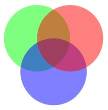

Annot#
引用自 Adobe PDF 参考：“注释将如笔记、声音或电影等对象与 PDF 文档中页面的某个位置关联，或通过鼠标和键盘提供与用户交互的方式。”
注释与其页面之间存在父子关系。如果页面对象变得不可用（如关闭文档或任何文档结构更改等），则其所有现有的注释对象也会失效——每当访问注释属性或方法时，都会抛出一个异常，提示对象是“孤立的”。
属性 |
简短描述 |
|---|---|
删除所有响应注释 |
|
获取附加文件内容 |
|
作为位图返回注释图像 |
|
获取音频注释的声音 |
|
提取注释文本 |
|
提取注释文本 |
|
为注释创建一个 TextPage |
|
设置注释边框属性 |
|
设置注释的混合模式 |
|
设置注释颜色 |
|
设置注释标志字段 |
|
定义注释为“响应于” |
|
设置注释名称字段 |
|
改变透明度 |
|
打开/关闭注释或其弹出窗口 |
|
为注释创建弹出窗口 |
|
更改注释矩形 |
|
改变旋转 |
|
更新附加文件内容 |
|
应用累积的注释更改 |
|
注释的混合模式 |
|
边框详细信息 |
|
边框/背景和填充颜色 |
|
获取附加文件信息 |
|
注释标志 |
|
注释是否有弹出窗口 |
|
注释所响应的注释 |
|
各种信息 |
|
注释或其弹出窗口是否打开 |
|
线型注释的开始/结束外观 |
|
链接到下一个注释 |
|
注释的透明度 |
|
注释的页面对象 |
|
注释弹出窗口的矩形 |
|
注释弹出窗口的 PDF |
|
包含注释的矩形 |
|
注释类型 |
|
多边形、折线等的点坐标 |
|
注释的 PDF |
Quote from the Adobe PDF 参考: “An annotation associates an object such as a note, sound, or movie with a location on a page of a PDF document, or provides a way to interact with the user by means of the mouse and keyboard.”
There is a parent-child relationship between an annotation and its page. If the page object becomes unusable (closed document, any document structure change, etc.), then so does every of its existing annotation objects – an exception is raised saying that the object is “orphaned”, whenever an annotation property or method is accessed.
Attribute |
Short Description |
|---|---|
delete all responding annotations |
|
get attached file content |
|
image of the annotation as a pixmap |
|
get the sound of an audio annotation |
|
extract annotation text |
|
extract annotation text |
|
create a TextPage for the annotation |
|
set annotation’s border properties |
|
set annotation’s blend mode |
|
set annotation’s colors |
|
set annotation’s flags field |
|
define the annotation to being “In Response To” |
|
set annotation’s name field |
|
change transparency |
|
open / close annotation or its Popup |
|
create a Popup for the annotation |
|
change annotation rectangle |
|
change rotation |
|
update attached file content |
|
apply accumulated annot changes |
|
annotation BlendMode |
|
border details |
|
border / background and fill colors |
|
get attached file information |
|
annotation flags |
|
whether annotation has a Popup |
|
annotation to which this one responds |
|
various information |
|
whether annotation or its Popup is open |
|
start / end appearance of line-type annotations |
|
link to the next annotation |
|
the annot’s transparency |
|
page object of the annotation |
|
rectangle of the annotation’s Popup |
|
the PDF |
|
rectangle containing the annotation |
|
type of the annotation |
|
point coordinates of Polygons, PolyLines, etc. |
|
the PDF |
Class API
- class Annot#
- get_pixmap(matrix=pymupdf.Identity, dpi=None, colorspace=pymupdf.csRGB, alpha=False)#
变更于 v1.19.2: 添加了对 dpi 参数的支持。
从注释创建一个像素图，按照页面上的未变换坐标显示。像素图的 IRect 等于 Annot.rect.irect （见下文）。所有参数仅支持关键字传递。
- 参数:
matrix (matrix_like) – 用于图像创建的矩阵。默认值为 Identity。
dpi (int) – （v1.19.2 新增） 期望的分辨率（每英寸点数）。如果不为
None，则忽略 matrix 参数。colorspace (Colorspace) – 用于图像创建的颜色空间。默认值为 pymupdf.csRGB。
alpha (bool) – 是否包含透明度信息。默认值为 False。
- 返回类型:
备注
如果注释刚刚被创建或修改，建议先使用
Document.reload_page()重新加载页面，例如：page = doc.reload_page(page)。当
alpha=True时，生成的像素图将具有 “预乘” 像素。要了解更多相关背景信息，可参考 “Premultiplied alpha” 术语，例如查看 此处。
- get_text(opt, clip=None, flags=None)#
新增于 1.18.0
以多种格式获取注释内容 —— 类似于 Page 的同名方法。目前仅对 ‘FreeText’ 和 ‘Stamp’ 类型的注释返回相关数据，其他类型返回空字符串（或等效对象）。
- 参数:
opt (str) –
（仅限位置参数）所需的文本格式，必须是以下值之一。请注意，此方法的行为与 Page 的同名方法完全相同。
”text” –
TextPage.extractTEXT()，默认选项”blocks” –
TextPage.extractBLOCKS()”words” –
TextPage.extractWORDS()”html” –
TextPage.extractHTML()”xhtml” –
TextPage.extractXHTML()”xml” –
TextPage.extractXML()”dict” –
TextPage.extractDICT()”json” –
TextPage.extractJSON()”rawdict” –
TextPage.extractRAWDICT()
clip (rect-like) – （仅限关键字参数）限制提取区域。通常无需使用，默认为
Annot.rect。flags (int) – （仅限关键字参数）控制返回数据的详细程度。默认为简单文本提取。
- get_textbox(rect)#
新增于 1.18.0
返回注释的文本内容。与
Annot.get_text()的 “text” 选项类似（但不包含换行符）。- 参数:
rect (rect-like) – 指定区域，默认为
Annot.rect。
- get_textpage(clip=None, flags=3)#
为该注释创建一个 TextPage。
- 参数:
flags (int) – 指示位，控制后续文本提取和搜索的内容可用性 – 参见
Annot.get_text()方法的参数。clip (rect-like) – 限制提取文本的区域。
- 返回:
Show/hide history
v1.25.5: 修复了
clip参数。
- set_info(info=None, content=None, title=None, creationDate=None, modDate=None, subject=None)#
变更于 1.16.10
更改注释的属性，包括日期、内容、主题和作者（标题）。name 和 id 的变更将被忽略。更新是选择性的：要保持某个属性不变，请将其设置为 None；要删除现有数据，请使用空字符串。
- 参数:
info (dict) – 与 info 属性兼容的字典（见下文）。所有条目必须为字符串。如果此参数不是字典，则使用其他参数，否则它们将被忽略。
content (str) – (v1.16.10 新增) 参见
info的描述。title (str) – (v1.16.10 新增) 参见
info的描述。creationDate (str) – (v1.16.10 新增) 注释的创建日期。应使用 PDF 日期时间格式。
modDate (str) – (v1.16.10 新增) 最后修改日期。应使用 PDF 日期时间格式。
subject (str) – (v1.16.10 新增) 参见
info的描述。
- set_line_ends(start, end)#
设置注释的线端样式。这些注释类型由一系列点定义，这些点由线段连接。start 符号附加到第一点，end 符号附加到最后一点。如果注释类型不支持该功能，则不会执行任何操作，并会发出警告信息。
备注
虽然 ‘FreeText’、’Line’、’PolyLine’ 和 ‘Polygon’ 注释支持线端样式，但（Py-) MuPDF 不支持 ‘FreeText’ 的线端样式，因为它不支持该类型的标注。
(变更于 v1.16.16) 一些符号（如菱形、圆形、方形等）具有内部区域。默认情况下，这些区域填充为注释的填充颜色。如果该颜色为 None，则默认为白色。现在，可以使用
Annot.update()的 fill_color 参数覆盖默认颜色，为线端符号指定独立的填充颜色。
- 参数:
start (int) – 第一个点的符号编号。
end (int) – 最后一个点的符号编号。
- set_oc(xref)#
使用 PDF 可选内容机制设置注释的可见性。可见性由支持的 PDF 查看器的用户界面控制，独立于
Annot.flags等其他属性。- 参数:
xref (int) – 可选内容组（OCG 或 OCMD）的
xref。任何之前的 xref 都会被覆盖。如果设为零，则删除先前的条目。如果 xref 既不为零又不是有效的 PDF 对象，则会引发异常。
备注
这 不需要执行
Annot.update()即可生效。
- set_irt_xref(xref)#
新增于 v1.19.3
将注释设置为“响应于”另一个注释。
- set_open(value)#
新增于 v1.18.4
设置注释的弹出注释（Popup）是否打开或关闭 —— 或者 如果其类型为 ‘Text’（“便签”），则直接控制该注释的状态。
- 参数:
value (bool) – 期望的打开状态。
- set_popup(rect)#
新增于 v1.18.4
为该注释创建一个弹出注释（Popup）并指定其矩形区域。如果 Popup 已存在，则仅更新其矩形区域。
- 参数:
rect (rect_like) – 期望的矩形区域。
- set_opacity(value)#
设置注释的透明度。透明度也可以在
Annot.update()方法中设置。- 参数:
value (float) – 取值范围为 [0, 1] 的浮点数。超出此范围的值将被视为 1。例如，值 0.5 表示透明度为 50%。
下面是三个重叠的 ‘Circle’ 注释，每个的透明度均设置为 0.5：

- blendmode#
新增于 v1.18.4
注释的混合模式。详细说明请参阅 Adobe PDF 参考 第 324 页。
- 返回类型:
str
- 返回:
混合模式或 None。
- set_blendmode(blendmode)#
新增于 v1.16.14
设置注释的混合模式。详细说明请参阅 Adobe PDF 参考 第 324 页。混合模式也可以在
Annot.update()方法中设置。- 参数:
blendmode (str) – 设定混合模式。使用
Annot.update()以在视觉外观上生效。可用的预定义值请参阅 PDF 标准混合模式。使用PDF_BM_Normal移除 混合模式。
- set_name(name)#
新增于 v1.16.0
更改任何类型注释的名称字段。对于 ‘FileAttachment’ 和 ‘Text’ 注释，该字段表示图标名称；对于 ‘Stamp’ 注释，该字段表示印章上的文本。具体的视觉效果取决于 PDF 查看器。请参阅 MuPDF 中的注释图标。
- 参数:
name (str) – 新的名称。
小心
如果为 ‘Stamp’ 注释设置名称，该操作 不会更改 其矩形区域，也不会自动调整文本布局。如果名称是 图章注释图标 中的标准文本（即
"STAMP_"之后的 确切 名称），那么应当保留原始布局。若使用 任意文本，则不会自动转换为大写，而是会以 “Times-Bold” 字体显示，水平居中，单行显示，并被截断以适应尺寸。要确保文本完整显示，其在字号fontsize=20下的长度不得超过 190 点。因此，请确保以下不等式成立：pymupdf.get_text_length(text, fontname="tibo", fontsize=20) <= 190
- set_rect(rect)#
更改注释的矩形区域。可以移动注释，并且矩形的两侧可以独立缩放。但注释的外观不会被旋转、翻转或倾斜。此方法仅影响某些注释类型 [4]，对于其他类型会在 Python 的
sys.stderr产生消息，但不会引发异常，而是返回False。- 参数:
rect (rect_like) – 注释的新矩形区域（必须是有限且非空的）。例如，使用 annot.rect + (5, 5, 5, 5) 将注释位置向右和向下移动 5 个像素。
备注
无需 调用
Annot.update()以使更改生效。
- set_rotation(angle)#
设置注释的旋转角度。旋转操作围绕矩形的中心点进行，然后计算一个 新的注释矩形 来适应旋转后的形状。
- 参数:
angle (int) – 旋转角度（以度为单位）。可以使用任意值，但实际值会被限制在
[0, 360)范围内。
备注
必须调用
Annot.update()以使更改生效。对于
PDF_ANNOT_FREE_TEXT，仅支持 0、90、180 和 270 度，这些值将 旋转文本，但矩形区域保持不变。其他值会被忽略并自动替换为 0。仅支持以下 注释类型 旋转：’Square’、’Circle’、’Caret’、’Text’、’FileAttachment’、’Ink’、’Line’、’Polyline’、’Polygon’ 和 ‘Stamp’。其他类型的注释不会受影响。
- set_border(border=None, width=None, style=None, dashes=None, clouds=None)#
版本 1.16.9 变更: 允许直接指定参数，而不使用字典。
版本 1.22.5 变更: 支持“云状”边框效果。
仅适用于 PDF：更改边框的宽度、虚线样式、边框风格和云状效果。详细信息请参阅
Annot.border属性。- 参数:
border (dict) – 一个字典，键包括 “width” (float)、”style” (str)、”dashes” (sequence) 和 “clouds” (int)。省略的键不会被更改。若
border=None（默认值），则使用其他参数。width (float) – 非负值将更改边框线的宽度。
style (str) – 若提供非
None值，则修改边框样式。dashes (sequence) – 序列中的所有元素必须是整数，否则该参数会被忽略。要移除虚线样式，使用
dashes=[]。如果dashes是非空序列，则style会自动设为"D"（虚线）。clouds (int) – 若值大于等于 0，则更改该属性。使用
clouds=0可完全移除云状效果。仅 ‘Square’、’Circle’ 和 ‘Polygon’ 类型的注释支持该属性。
- set_flags(flags)#
更改注释的标志。可以使用
|运算符组合多个标志。- 参数:
flags (int) – 指定所需标志的整数值。
- set_colors(colors=None, stroke=None, fill=None)#
版本 1.16.9 变更: 允许直接设置颜色，而不仅仅是字典方式。
更改可用注释类型的“描边”和“填充”颜色（并非所有注释都接受这两种颜色）。
- 参数:
colors (dict) – 包含颜色信息的字典。最便捷的方法是先复制 colors 属性的内容，再进行修改。
stroke (sequence) – 见上文说明。
fill (sequence) – 见上文说明。
版本 1.18.5 变更: 若要完全移除颜色配置，请使用空序列
[]。如果指定None，则现有配置不会被更改。
- delete_responses()#
新增于 v1.16.12
删除所有引用当前注释的其他注释。这包括所有 ‘Popup’（弹出）注释以及所有对其作出响应的注释。
- update(opacity=None, blend_mode=None, fontsize=0, text_color=None, border_color=None, fill_color=None, cross_out=True, rotate=-1)#
在更改相关属性后，使注释的外观与其属性同步。
仅在以下更改中可以 安全地省略 此方法：
Annot.set_info()（除非更改 “content”）
所有参数都是可选的。 (v1.16.14 变更) 混合模式和透明度适用于 所有注释类型，其他参数主要用于特定用途，如下所述。
颜色规范应采用 PuMuPDF 通常使用的格式，即 0.0 到 1.0 之间的浮点数序列（包含 0.0 和 1.0）。序列长度必须为 1、3 或 4（分别支持 GRAY、RGB 和 CMYK 颜色空间）。对于 GRAY 颜色，也可以只使用一个浮点数。
- 参数:
opacity (float) – (v1.16.14 新增) 适用于所有注释类型：更改或设置注释的透明度。有效值范围为 0 <= opacity < 1。
blend_mode (str) – (v1.16.14 新增) 适用于所有注释类型：更改或设置注释的混合模式。有效值请参阅 PDF 标准混合模式。
fontsize (float) – 更改文本的
fontsize，仅适用于 ‘FreeText’ 注释。text_color (sequence,float) – 更改文本颜色，仅适用于 ‘FreeText’ 注释。
border_color (sequence,float) – 更改边框颜色，仅适用于 ‘FreeText’ 注释。
fill_color (sequence,float) –
设置填充颜色。
’Line’、’Polyline’、’Polygon’ 注释：用于为适用的线端符号指定不同于注释的填充颜色 (v1.16.16 变更)。
cross_out (bool) – (v1.17.2 新增) 在注释矩形上添加两条对角线，仅适用于 ‘Redact’ 注释。如果不需要，应显式指定 False，即使该注释创建时默认值为 False。
rotate (int) – 设置新的旋转角度。默认值 (-1) 表示不更改。支持 ‘FreeText’ 和其他几种注释类型（参见
Annot.set_rotation()） [3]。对于 ‘FreeText’，仅可选 0、90、180 或 270 度，否则任何整数都是可接受的。
- 返回类型:
bool
备注
不建议 在
Page.annots()循环中使用此方法！因为大多数注释更新都需要重新加载所属页面，而这无法在该循环内完成。请参考该生成器文档中的示例代码模式。
- file_info#
附加文件的基本信息。
- 返回类型:
dict
- 返回:
一个包含以下键的字典： filename （文件名）、 ufilename （Unicode 文件名）、 desc （描述）、 size （未压缩文件大小）、 length （压缩长度）。仅适用于 ‘FileAttachment’ 注释类型，否则返回 None。
- get_file()#
返回附加文件的内容。
- 返回类型:
bytes
- 返回:
附加文件的二进制内容。
- update_file(buffer=None, filename=None, ufilename=None, desc=None)#
更新附加文件的内容。所有参数都是可选的。如果不提供任何参数，则此方法不会执行任何操作。
- 参数:
buffer (bytes|bytearray|BytesIO) –
新的文件内容。如果省略，则只修改元信息。
(v1.14.13 变更) 现在支持 io.BytesIO。
filename (str) – 关联的文件名。
ufilename (str) – 关联的 Unicode 文件名。
desc (str) – 文件内容的新描述。
- get_sound()#
返回音频注释中嵌入的声音。
- 返回类型:
dict
- 返回:
包含音频文件及其相关属性的字典。其中，只有 “rate” 和 “stream” 始终存在，其余键可能会缺失。
键名
描述
rate
(float, 必需) 采样率（每秒样本数）
channels
(int, 可选) 声道数
bps
(int, 可选) 每通道每个样本的比特数
encoding
(str, 可选) 编码格式：Raw, Signed, muLaw, ALaw
compression
(str, 可选) 压缩过滤器名称
stream
(bytes, 必需) 声音文件内容
- opacity#
注释的透明度。如果设置了该值，它的范围为 [0, 1]。PDF 的默认值是 1。然而，为了区分未设置的情况，当透明度未定义时，返回 -1.0。
- 返回类型:
float
- rotation#
注释的旋转角度。
- 返回类型:
int
- 返回:
范围在 [-1, 359] 之间的整数。如果没有旋转，则返回 -1（意味着旋转角度为 0）。其他可能的值将被归一化到 0 <= angle < 360 的范围内。
- next#
该页面上的下一个注释，如果没有则返回 None。
- 返回类型:
Annot
- type#
一个列表，包含一个数字和一个或两个字符串，用于描述注释类型，例如 [2, ‘FreeText’, ‘FreeTextCallout’]。第二个字符串项是可选的，可能为空。完整的可能值及其含义请参见附录 注释类型。
- 返回类型:
list
- info#
一个包含各种信息的字典。所有字段都是可选的字符串。对于未提供的信息项，返回空字符串。
name —— 例如，对于 ‘Stamp’ 注释，该字段将包含印章文本，如 “Sold” 或 “Experimental”；对于其他注释类型，此字段将显示注释图标的名称（例如 “PushPin” 适用于 FileAttachment）。
content —— 包含 Text 和 FreeText 类型注释的文本。通常用于填充注释弹出窗口的文本字段。
title —— 包含注释弹出窗口标题的字符串。按照惯例，该字段用于存储 注释作者 的信息。
creationDate —— 创建时间戳。
modDate —— 最后修改时间戳。
subject —— 主题。
id —— (v1.16.10 新增) 注释的唯一标识符。该值取自 PDF 关键字 /NM。PyMuPDF 添加的注释都会有唯一的名称，该名称将显示在此字段中。
- 返回类型:
dict
- flags#
一个整数，其低位包含注释的显示方式标志。
- 返回类型:
int
- line_ends#
指定 ‘FreeText’、’Line’、’PolyLine’ 和 ‘Polygon’ 类型注释的起始和结束符号的整数对。如果不适用，则为 None。可能的值及其描述请参考 Adobe PDF 参考，第 400 页的表 1.76。
- 返回类型:
tuple
- vertices#
一个列表，包含各种注释类型的多个点（“顶点”）坐标，每个点由一对浮点数表示：
‘Line’ —— 起点和终点坐标（2 组浮点数）。
‘FreeText’ —— 2 组或 3 组浮点数，分别表示起点、（可选）折点和终点坐标。
‘PolyLine’ / ‘Polygon’ —— 由线段连接的各个边的坐标（n 组浮点数代表 n 个点）。
文本标注注释 —— 4 组浮点数，指定标注文本范围的 QuadPoints （见 Adobe PDF 参考，第 403 页）。
‘Ink’ —— 一个或多个子列表，每个子列表包含一系列顶点坐标，每个子列表代表绘图中的一条独立的线。
- 返回类型:
list
- colors#
一个字典，包含两个浮点数列表（取值范围 0 <= float <= 1），分别指定“描边”颜色（stroke）和内部填充颜色（fill）。描边颜色用于边框及所有需要描绘或书写的部分。填充颜色用于对象内部，如线端、圆形和方形。列表长度决定所使用的颜色空间：1 = GRAY，3 = RGB，4 = CMYK。例如，”[1.0, 0.0, 0.0]” 代表 RGB 颜色红色。如果没有颜色指定，这两个列表可能为空。
- 返回类型:
dict
- has_popup#
该注释是否具有弹出式注释（Popup）。
- 返回类型:
bool
- is_open#
该注释的弹出式窗口是否打开 —— 或 该注释本身是否打开（仅适用于 ‘Text’ 类型注释）。
- 返回类型:
bool
- rect_delta#
一个包含四个浮点数的元组，表示注释的
/RD条目。这四个数值描述了两个矩形的数值差异（左、上、-右、-下）：分别对应注释的rect和该矩形内部的另一个矩形。如果此条目缺失，则该属性为(0, 0, 0, 0)。如果注释的边框是普通直线，则这些数值通常是边框宽度的一半。如果边框是“云状”（cloudy），那么这些数值会表示云形半圆的宽度。一般来说，这些数值可以不相等。要计算内部矩形，可以使用
a.rect + a.rect_delta。
- border#
一个包含边框特性的字典。如果没有边框信息，则为空字典。可能包含以下键：
width —— 一个浮点数，表示边框厚度（单位：点）。如果未指定宽度，则值为 -1.0。
dashes —— 一个整数序列，指定线条的虚线模式。
[]表示实线（无虚线），[n]表示等长的虚实交替模式（每段长度为 n 点），更长的列表表示交替的虚实长度值。详细信息请参考 Adobe PDF 参考 第 126 页。style —— 一个 1 字节的字符串，表示边框样式：
“S” (Solid) —— 实线边框，围绕注释。
“D” (Dashed) —— 虚线边框，围绕注释，虚线模式由 dashes 指定。
“B” (Beveled) —— 模拟的浮雕矩形，使边框看起来高于页面表面。
“I” (Inset) —— 模拟的雕刻矩形，使边框看起来低于页面表面。
“U” (Underline) —— 仅在注释矩形的底部绘制一条实线。
clouds —— 一个整数，表示“云状”边框的类型，范围
-1 <= n <= 2。n = 0表示直线（无云状效果），1 表示小型云状半圆，2 表示大型云状半圆。如果值为 -1，则未指定云状边框。
- 返回类型:
dict
MuPDF 中的注释图标#
Annotation Icons in MuPDF
这是注释类型“文本”和“文件附件”的可按名称引用的图标列表。您可以在添加注释时通过 icon 参数使用它们，或者在 Annot.set_name() 中使用 as 参数。您可以自行决定何时选择哪个项目 - 没有任何机制可以阻止您使用例如“文件附件”的“扬声器”图标。
This is a list of icons referenceable by name for annotation types ‘Text’ and ‘FileAttachment’. You can use them via the icon parameter when adding an annotation, or use the as argument in Annot.set_name(). It is left to your discretion which item to choose when – no mechanism will keep you from using e.g. the “Speaker” icon for a ‘FileAttachment’.
例子#
Example
更改注释的图形图像。还可以更新“作者”和要显示在弹出窗口中的文本:
doc = pymupdf.open("circle-in.pdf")
page = doc[0] # 页面 0
annot = page.first_annot # 获取注释
annot.set_border(dashes=[3]) # 设置虚线为 "3 on, 3 off ..."
# 设置边框和填充颜色为蓝色
annot.set_colors({"stroke":(0, 0, 1), "fill":(0.75, 0.8, 0.95)})
info = annot.info # 获取信息字典
info["title"] = "Jorj X. McKie" # 设置作者
# 弹出窗口中的文本...
info["content"] = "我更改了边框和颜色，并将图像放大了 20%。"
info["subject"] = "PyMuPDF 演示" # 一些 PDF 查看器也会显示此内容
annot.set_info(info) # 更新信息字典
r = annot.rect # 获取注释矩形
r.x1 = r.x0 + r.width * 1.2 # 新位置与左上角相同
r.y1 = r.y0 + r.height * 1.2 # 但边长延长了 20%
annot.set_rect(r) # 更新矩形
annot.update() # 更新注释外观
doc.save("circle-out.pdf") # 保存
这就是圆形注释在更改前后的样子（使用 Nitro PDF 查看器显示的弹出窗口）：
Change the graphical image of an annotation. Also update the “author” and the text to be shown in the popup window:
doc = pymupdf.open(“circle-in.pdf”) page = doc[0] # page 0 annot = page.first_annot # get the annotation annot.set_border(dashes=[3]) # set dashes to “3 on, 3 off …”
# set stroke and fill color to some blue annot.set_colors({“stroke”:(0, 0, 1), “fill”:(0.75, 0.8, 0.95)}) info = annot.info # get info dict info[“title”] = “Jorj X. McKie” # set author
# text in popup window … info[“content”] = “I changed border and colors and enlarged the image by 20%.” info[“subject”] = “Demonstration of PyMuPDF” # some PDF viewers also show this annot.set_info(info) # update info dict r = annot.rect # take annot rect r.x1 = r.x0 + r.width * 1.2 # new location has same top-left r.y1 = r.y0 + r.height * 1.2 # but 20% longer sides annot.set_rect(r) # update rectangle annot.update() # update the annot’s appearance doc.save(“circle-out.pdf”) # save
This is how the circle annotation looks like before and after the change (pop-up windows displayed using Nitro PDF viewer):

Footnotes